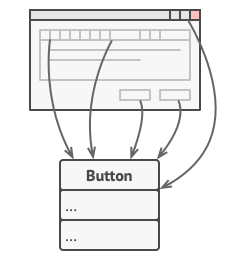
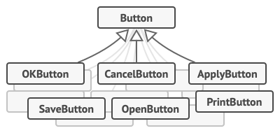
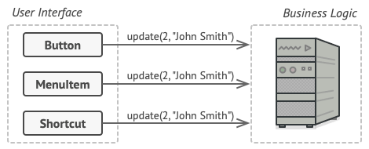
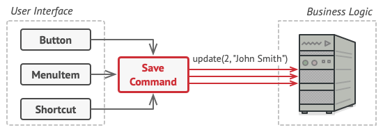
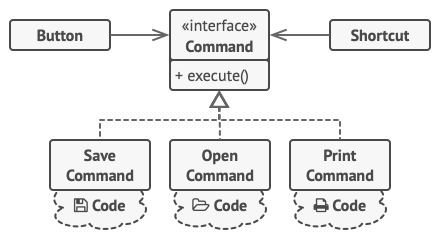
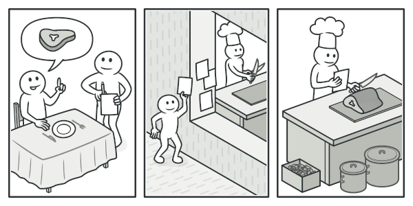
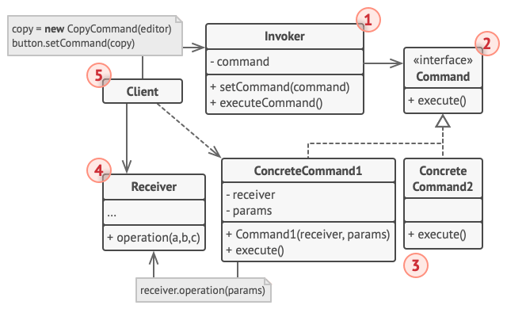

Command Pattern
Command is a behavioral design pattern that turns a request into a stand-alone object that contains all information about the request. This transformation lets you pass requests as method arguments, delay or queue a request’s execution, and support undoable operations.
Problem
Imagine that you’re working on a new text-editor app. Your current task is to create a toolbar with a bunch of buttons for various operations of the editor. You created a very neat Button class that can be used for buttons on the toolbar, as well as for generic buttons in various dialogs.

All buttons of the app are derived from the same class.
While all of these buttons look similar, they’re all supposed to do different things. Where would you put the code for the various click handlers of these buttons? The simplest solution is to create tons of subclasses for each place where the button is used. These subclasses would contain the code that would have to be executed on a button click.

Lots of button subclasses. What can go wrong?
Before long, you realize that this approach is deeply flawed. First, you have an enormous number of subclasses, and that would be okay if you weren’t risking breaking the code in these subclasses each time you modify the base Button class. Put simply, your GUI code has become awkwardly dependent on the volatile code of the business logic.
Several classes implement the same functionality.
And here’s the ugliest part. Some operations, such as copying/pasting text, would need to be invoked from multiple places. For example, a user could click a small “Copy” button on the toolbar, or copy something via the context menu, or just hit Ctrl+C on the keyboard.
Initially, when our app only had the toolbar, it was okay to place the implementation of various operations into the button subclasses. In other words, having the code for copying text inside the CopyButton subclass was fine. But then, when you implement context menus, shortcuts, and other stuff, you have to either duplicate the operation’s code in many classes or make menus dependent on buttons, which is an even worse option.
Solution
Good software design is often based on the principle of separation of concerns, which usually results in breaking an app into layers. The most common example: a layer for the graphical user interface and another layer for the business logic. The GUI layer is responsible for rendering a beautiful picture on the screen, capturing any input and showing results of what the user and the app are doing. However, when it comes to doing something important, like calculating the trajectory of the moon or composing an annual report, the GUI layer delegates the work to the underlying layer of business logic.
In the code it might look like this: a GUI object calls a method of a business logic object, passing it some arguments. This process is usually described as one object sending another a request.

The GUI objects may access the business logic objects directly.
The Command pattern suggests that GUI objects shouldn’t send these requests directly. Instead, you should extract all of the request details, such as the object being called, the name of the method and the list of arguments into a separate command class with a single method that triggers this request.
Command objects serve as links between various GUI and business logic objects. From now on, the GUI object doesn’t need to know what business logic object will receive the request and how it’ll be processed. The GUI object just triggers the command, which handles all the details.

Accessing the business logic layer via a command.
The next step is to make your commands implement the same interface. Usually it has just a single execution method that takes no parameters. This interface lets you use various commands with the same request sender, without coupling it to concrete classes of commands. As a bonus, now you can switch command objects linked to the sender, effectively changing the sender’s behavior at runtime.
You might have noticed one missing piece of the puzzle, which is the request parameters. A GUI object might have supplied the business-layer object with some parameters. Since the command execution method doesn’t have any parameters, how would we pass the request details to the receiver? It turns out the command should be either pre-configured with this data, or capable of getting it on its own.

The GUI objects delegate the work to commands.
Let’s get back to our text editor. After we apply the Command pattern, we no longer need all those button subclasses to implement various click behaviors. It’s enough to put a single field into the base Button class that stores a reference to a command object and make the button execute that command on a click.
You’ll implement a bunch of command classes for every possible operation and link them with particular buttons, depending on the buttons’ intended behavior.
Other GUI elements, such as menus, shortcuts or entire dialogs, can be implemented in the same way. They’ll be linked to a command which gets executed when a user interacts with the GUI element. As you’ve probably guessed by now, the elements related to the same operations will be linked to the same commands, preventing any code duplication.
As a result, commands become a convenient middle layer that reduces coupling between the GUI and business logic layers. And that’s only a fraction of the benefits that the Command pattern can offer!
Real‑World Analogy

Making an order in a restaurant.
After a long walk through the city, you get to a nice restaurant and sit at the table by the window. A friendly waiter approaches you and quickly takes your order, writing it down on a piece of paper. The waiter goes to the kitchen and sticks the order on the wall. After a while, the order gets to the chef, who reads it and cooks the meal accordingly. The cook places the meal on a tray along with the order. The waiter discovers the tray, checks the order to make sure everything is as you wanted it, and brings everything to your table.
The paper order serves as a command. It remains in a queue until the chef is ready to serve it. The order contains all the relevant information required to cook the meal. It allows the chef to start cooking right away instead of running around clarifying the order details from you directly.
Structure
Structure

-
The Sender class (aka invoker) is responsible for initiating requests. This class must have a field for storing a reference to a command object. The sender triggers that command instead of sending the request directly to the receiver. Note that the sender isn’t responsible for creating the command object. Usually, it gets a pre-created command from the client via the constructor.
-
The Command interface usually declares just a single method for executing the command.
-
Concrete Commands implement various kinds of requests. A concrete command isn’t supposed to perform the work on its own, but rather to pass the call to one of the business logic objects. However, for the sake of simplifying the code, these classes can be merged.
Parameters required to execute a method on a receiving object can be declared as fields in the concrete command. You can make command objects immutable by only allowing the initialization of these fields via the constructor.
-
The Receiver class contains some business logic. Almost any object may act as a receiver. Most commands only handle the details of how a request is passed to the receiver, while the receiver itself does the actual work.
-
The Client creates and configures concrete command objects. The client must pass all of the request parameters, including a receiver instance, into the command’s constructor. After that, the resulting command may be associated with one or multiple senders.
C++ Implementation
/**
* The Command interface declares a method for executing a command.
*/
class Command {
public:
virtual ~Command() {}
virtual void Execute() const = 0;
};
/**
* Some commands can implement simple operations on their own.
*/
class SimpleCommand : public Command {
private:
std::string pay_load_;
public:
explicit SimpleCommand(std::string pay_load) : pay_load_(pay_load) {}
void Execute() const override {
std::cout << "SimpleCommand: See, I can do simple things like (" << this->pay_load_ << ")\n";
}
};
/**
* The Receiver classes contain some important business logic.
*/
class Receiver {
public:
void DoSomething(const std::string &a) {
std::cout << "Receiver: Working on (" << a << ".)\n";
}
void DoSomethingElse(const std::string &b) {
std::cout << "Receiver: Also working on (" << b << ".)\n";
}
};
class ComplexCommand : public Command {
private:
Receiver *receiver_;
std::string a_;
std::string b_;
public:
ComplexCommand(Receiver *receiver, std::string a, std::string b)
: receiver_(receiver), a_(a), b_(b) {}
void Execute() const override {
std::cout << "ComplexCommand: Complex stuff should be done by a receiver object.\n";
this->receiver_->DoSomething(this->a_);
this->receiver_->DoSomethingElse(this->b_);
}
};
class Invoker {
private:
Command *on_start_;
Command *on_finish_;
public:
~Invoker() {
delete on_start_;
delete on_finish_;
}
void SetOnStart(Command *command) { this->on_start_ = command; }
void SetOnFinish(Command *command) { this->on_finish_ = command; }
void DoSomethingImportant() {
std::cout << "Invoker: Does anybody want something done before I begin?\n";
if (this->on_start_) this->on_start_->Execute();
std::cout << "Invoker: ...doing something really important...\n";
if (this->on_finish_) this->on_finish_->Execute();
}
};
int main() {
Invoker *invoker = new Invoker;
invoker->SetOnStart(new SimpleCommand("Say Hi!"));
Receiver *receiver = new Receiver;
invoker->SetOnFinish(new ComplexCommand(receiver, "Send email", "Save report"));
invoker->DoSomethingImportant();
delete invoker;
delete receiver;
return 0;
}
Applicability
Use the Command pattern when you want to parameterize objects with operations.
The Command pattern can turn a specific method call into a stand-alone object. This change opens up a lot of interesting uses: you can pass commands as method arguments, store them inside other objects, switch linked commands at runtime, etc.
Use the Command pattern when you want to queue operations, schedule their execution, or execute them remotely.
As with any other object, a command can be serialized. Thus, you can delay and schedule command execution, or even queue, log, or send commands over the network.
Use the Command pattern when you want to implement reversible operations.
To be able to revert operations, you need to implement the history of performed operations. The command history is a stack that contains all executed command objects along with related backups of the application’s state.
⚖️ Pros & Cons
- Single Responsibility Principle. You can decouple classes that invoke operations from classes that perform these operations.
- Open/Closed Principle. You can introduce new commands into the app without breaking existing client code.
- You can implement undo/redo.
- You can implement deferred execution of operations.
- You can assemble a set of simple commands into a complex one.
- The code may become more complicated since you’re introducing a whole new layer between senders and receivers.
Relations with Other Patterns
- Chain of Responsibility, Command, Mediator, and Observer address different ways of connecting senders and receivers. Command establishes unidirectional connections.
- Handlers in Chain of Responsibility can be implemented as Commands.
- Use Command and Memento together to implement "undo".
- Command converts operations into objects, while Strategy describes different ways of doing the same thing.
- Prototype can help save copies of Commands into history.
- Visitor can be treated as a powerful version of the Command pattern.